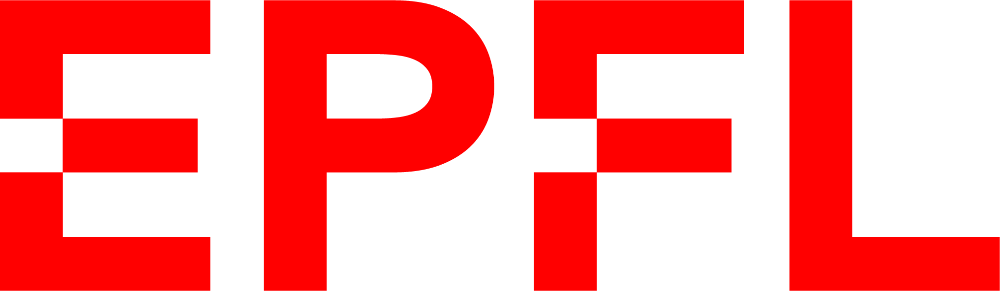

About Me
Swiss engineer with a passion for robotics, biomechanics, and software-driven innovation. I thrive at the intersection of technology, design, and human-centered solutions, blending rigorous engineering with creative problem-solving. I approach every challenge with curiosity, creativity, and a can-do attitude, and I am fully committed to the projects I undertake. I enjoy creating impactful solutions while collaborating with great teams — and when I’m not at work, you’ll find me outdoors, from skiing the mountains to kitesurfing the waves.
Experience
ZHAW – Research Engineer
Embedded systems, BLE, CAD, 3D printing, biomechanics research.
UBS / Credit Suisse – Quantitative Engineer
React, Python, Dash, regulatory risk tools, agile teamwork.
Alphadyne – Technology Intern
Model validation, financial engineering, Python coding, NYC-based.
Education

Ecole polytechnique fédérale de Lausanne (EPFL), Switzerland
Bachelor of Science in Microengineering (2016–2019)
Master in Robotics with medical orientation (2019–2022)
Harvard Medical School, Boston, USA
Master exchange & Thesis collaboration (2021–2022)
Institut International de Lancy, Switzerland
Scientific Baccalauréat (2014–2016)
Specialization Mathematics – Highest Honors (19.5/20)
Projects
Skills & Strengths
Technical Skills
- Python
- React
- Matlab
- C / C++
- SQL
- ROS2
- Git
- CAD
- Unity
- 3D Slicer
Entrepreneurial / Soft Skills
- Creative problem-solving
- Team collaboration
- Project ownership & commitment
- Strategic thinking
- Communication & storytelling
- Adaptability & resilience
- User-centered design
- Time management & execution focus
Awards & Publications
Interests
Sports (Taekwondo, skiing, diving), arts (painting, pottery, piano), travel (USA, Korea...)
Contact
Email: lisa.mareschal1@gmail.com
LinkedIn: Lisa Mareschal